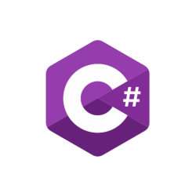
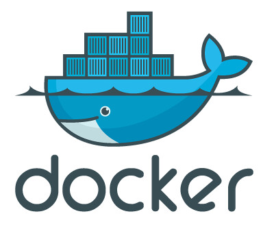

Development Skills
I can build anything with these. Always learning more.
C#
.NET
SQL Server
JavaScript
jQuery
React/Redux
CSS3

HTML5

Node.js/npm

Azure DevOps/Cloud

Docker
Angular 8

I'm a software developer living in the Pacific Northwest with a love for burritos, video games, and coding.
Click here to find out more about me.
I remember the iconic moment my dad updated the family PC from Windows 3.0 to Windows 3.1. Of course, back then I was only interested in the color scheme changes and the new features in Paintbrush. I spent hours drawing pictures and saving them to my personal 3.5" floppy disk, which was a beautiful sea green color.
During this time, I also learned to use the Command Prompt and MS-DOS Shell to play games. One of my favorite games was called "Dr. SBAITSO," which was not a game at all but a psychologist simulator. You could ask it questions through text input and have a mock-therapy session, where it would respond verbally with our fancy new sound card. The program didn't have the best pronunciation, and certainly didn't give the best advice, but my family had a lot of fun with the good doctor, testing its limits and patience. We still jokingly mispronounce "mistaken" as he did, "mis-TACK-en."
Thus began my love of programming. The grade school I attended had a relatively new computer lab full of old Apple computers, and my family computer was a PC, so I like to think I got the best of both worlds. The first computer I bought was a PowerMac G4, which I used for music projects and Photoshop, and designed a website for my band. That site, along with the constant desire to have the flashiest MySpace page, taught me my first HTML skills. Luckily, my band's GeoCities page has long since been decommissioned, and MySpace completely changed their format once people stopped using it, so there is no evidence of my past crimes against HTML. I have to say, HTML5 is much easier than previous iterations, and the things we can do with HTML5 combined with CSS and JavaScript make front-end design an entertaining experience.
My real love, though, is back-end development. It's something I've wanted to do since my first experiences with the Microsoft Command Prompt. When I moved across the country for work on the east coast, my first job there involved using IBM AS400-based software with the familiar black screen and green text. I loved how quick the program was, and how you could easily get the program to do what you wanted it to do once you learned the right commands. The company eventually changed over to a full web-based application, which was less pliable but more user-friendly. Learning to use that application was more involved, as navigation was slower and its quirks were harder to overcome. Not to be outdone by the stubborn personality of a modern program, I soon got a new position providing tech support for the application's internal and external users. I wasn't in Development yet, but I worked closely with the Dev team when problems arose, and full-stack development became my goal.
After attending The Tech Academy in 2018, I was hired to their development team as a full-stack developer
where I have been working since. We use C# in an ASP.NET MVC application with a React-Redux front end. We also planned the architecture for the next phase
of our application using .NET Core microservices containerized with Docker in Azure. Aside from those technologies, I have a huge love for jQuery and the
Wild West that is JavaScript. I am always looking to learn new languages and frameworks, most recently having built an app using Angular. See my
Portfolio section for details on my learning journey. Cheers!
Yes, I know Office well. It probably has something to do with working in offices my entire adult life or something.
Good service is good! Bad service is bad! I'm good at good service! You wouldn't believe my phone voice; I've been told to do radio. Okay, only once, but it was a happy moment.
Go team! I love every team I've ever been on.
I can get it done, and then some.
My first experience with JavaScript required I learn the language and create a functioning website within 6 days. To add to the challenge, it was all done in Notepad++ with no jQuery or Bootstrap libraries—raw HTML, CSS, and Javascript only!
One day, I'll go back and rewrite this with everything I know now. In the meantime, I think it is so cute to see the work I did when I was just starting.
I was excited to learn more SQL because I had worked with it peripherally at my job, writing scripts to update employee information in a database. Of course, at my job it was done with a template on an Excel binary spreadsheet, but it did require focus and logic to get the scripts to work properly before they were deployed to production. Due to my previous experience, I was able to pick up T-SQL and create a working relational database within a week.
"Join" me in viewing this on GitHub ;)C# was by far my favorite back-end language to learn and use. The programs I created range from a simple console app to calculate a triangle's hypotenuse length to more robust web applications allowing you to import an Excel file to update a database. One of my favorites was a web application I designed that calculates a quote for car insurance and stores the information in a database. Please note I am able to edit myself IRL and stay professional, but for practice projects, I like to have fun!
See it on GitHubThis project took all the skills I had learned so far and put them to practical use in a team environment using Agile and Scrum methodology. I was assigned to a team responsible for adding certain features to the Tech Academy website and LMS using C# and JavaScript in ASP.NET MVC architecture. Click the button below to read a full synopsis of my work on the project.
See it on GitHub